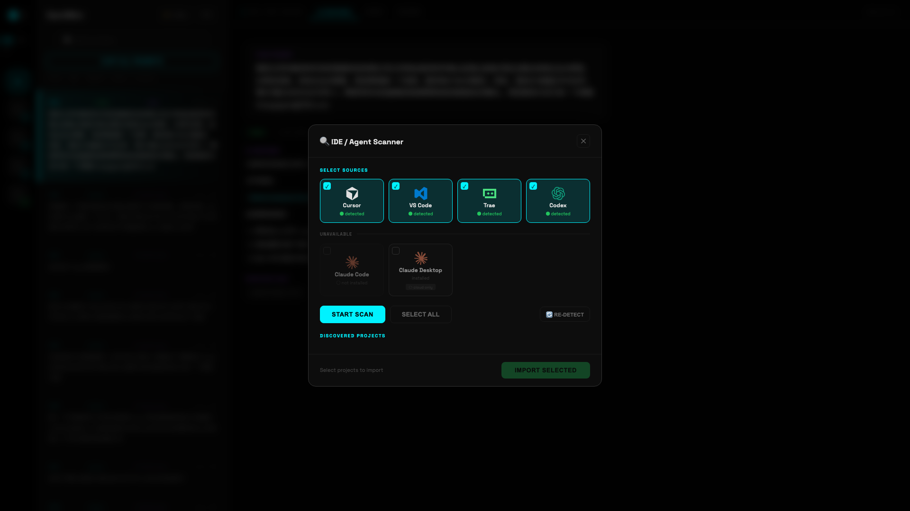

See It in Action
Real screenshots from the OpenBBox workspace.

The Three-Column Workspace: Prompt list → AI response → Code diff with line numbers

IDE Scanner: Auto-detects Cursor, VS Code, Trae, Codex and more on your machine